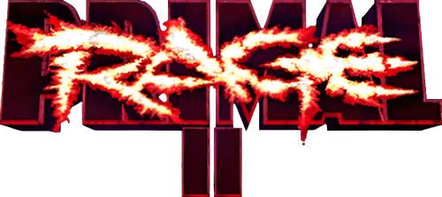
Move List/Bios/Endings - Arcade (Unreleased)
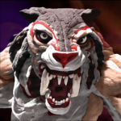
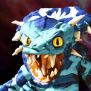
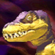
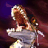
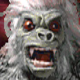
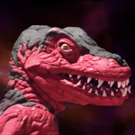
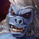
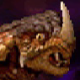
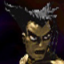
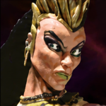
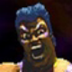
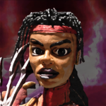
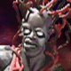
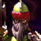
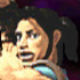
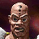
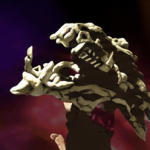
Where to play Primal Rage II:
Galloping Ghost Arcade - Brookfield, IL
You can e-mail corrections/additions to The Webmaster
Note: All commands are assuming your character is facing right.
If you are facing left, you must reverse the directional commands.
Backwards becoming Forwards and Vice Versa.
It's recommended that your controls match the default setting.
Last Updated: 08/04/26
Guide Credits
Key:
Arcade:
= High Quick
= High Fierce
= High Power
= Low Quick
= Low Fierce
= Low Power
= Any High Attack
= Any Low Attack
Other Moves:
Hyper Attack: (
Taunt: (causes Rage Meter to Charge!)
Eat Worshipper:
Throw: (
Overhead Smack: (
Big Jump Up:
Big Jump Forward:
Big Jump Back:
RAGE Morphs:
Unleash the Beast Within when the RAGE METER is full!
Rage Morph A: (
Rage Morph B: (
Rage Morph C: (
Rage Morph D: (
Combos:
Rage 2's Combos System operates on a interrupt system that's fun to use and encourages creativity.
It follows this basic pattern:
(Any Quick)-> (Any Fierce)-> (Any Power)-> (Hyper)-> (Special)
When you hit any opponent with an attack, you can immediately combo into any attack of a higher class.
Try this simple combo to start with:
(
After you master this pattern, try adding a special move to the end of the combo!
This interrupt system works the same whether the player is standing, crouching, or in the air.
Some moves work better in some combo situations that others.
A master will learn to use high and low attacks, as well as crouching and standing moves during a combo.
Experiment, and create your own favorite combinations!
Virtuous Beasts:
The Virtuous Beasts have fought for countless ages to maintain the balance of life on Urth. Though their goals are noble, their methods are often as brutal as the forces they oppose. When Necrosan descended upon Neo Urth and imprisoned the ancient gods, these mighty beings were forced to channel their power through human Avatars in order to continue the battle for survival.
Blizzard, Armadon, Talon, Sauron, Slashfang
Destructive Beasts:
The Destructive Beasts have long sought to reshape Neo Urth through power, fear, and domination. Their ambitions brought them into conflict with the Virtuous forces for ages. However, when Necrosan arrived from beyond the stars and imprisoned the ancient gods, even these forces of destruction were forced to fight against a greater threat.
Diablo, Chaos, Vertigo
Virtuous Avatars:
When Necrosan imprisoned the ancient gods of Neo Urth, their physical forms became trapped within his massive matrix. Unable to battle directly, the gods selected worthy mortals to become their Avatars. Through these chosen warriors, the ancient powers of Urth continue their fight for survival.
Kaze, Tor, Keena, Arik, Xiao Ming
Destructive Avatars:
When Necrosan imprisoned the ancient gods of Neo Urth, even the forces of destruction were forced to adapt. Through their chosen Avatars, these beings continue to unleash their power upon the world. They do not fight for peace or salvation - they fight for revenge, domination, and the right to shape the future of Urth themselves.
Sinjin, Shank, Malyssa
Arik
Info:
Gender: Male
Age: 29
Affiliation: Virtuous
Weapon: Carnivoron
Domain: Arik's Seawall
Avatar of: Sauron
Bio:
The fallen Prince Arik seeks revenge against Necrosan for the destruction of his kingdom and the loss of those he held dear. His desire for vengeance brought him before Sauron, the mighty God of Hunger, who recognized the strength hidden within the wounded
warrior.
Accepting Arik's vow of revenge, Sauron bestowed upon him the legendary sword Carnivoron. Empowered by the Lizard King's savage strength, Arik hunts Necrosan with a fury unmatched by any other warrior. But as the battle continues, Arik must decide whether
vengeance alone is enough to restore what was lost.
Special Moves:
Carnivorous Slash: 


Carnivorous Stab: 

Slicing Fury: ( )
)
Tackling Sky Stab: 
 (
( )
)
Extinctions:
Sword Decap: Unfinished
Suicide:
N/A
Ending:
After exacting his revenge on Necrosan, Arik orders a day of mourning for his friends and foes. People travel from afar to Arik's kingdom to honor the slain warriors of this Great War. Impressed with Arik's compassion as well as his fierce determination,
the people of other Shattered kingdoms elect to have Arik heal and rebuild their homes and lives. In his lifetime, Arik oversees the growth of Rosaunia to the largest, most prosperous, and most peaceful kingdom of Neo Urth. His kingdom began an unprecedented
1000 years of peace and prosperity throughout Neo Urth. Arik was remembered as a wise and compassionate leader who began this new age. Centuries later, his battle with Necrosan became just a tiny footnote in this great man's history.
Kaze
Info:
Gender: Male
Age: 27
Affiliation: Virtuous
Weapon: Dragon's Tooth
Domain: Blizzard's Haven
Avatar of: Blizzard
Bio:
Kaze is the chosen Avatar of Blizzard, carrying the wisdom and power of the ancient God of Good and Virtue. Guided by Blizzard's centuries of knowledge, he has become the voice and instrument of the Virtuous resistance against Necrosan.
With Blizzard's frozen power flowing through him, Kaze can command the forces of ice and cold against his enemies. Though he fights with the strength of an ancient god, Kaze remains mortal - and must prove that the courage of one human can stand against
the darkness consuming Neo Urth.
Special Moves:
A Hailstorm Slices: ( )
)
A Gale Wind Pierces: 

 /
/
A Frigid Mist Freeze if...: 

 (enhances other moves w/ freeze properties)
(enhances other moves w/ freeze properties)
*The Icy Lance Rises: 


*The Icicle Drops: (
 )
(In Air)
)
(In Air)
*Will freeze an opponent if empowered by the mist
Extinctions:
Ice Sculpture: (

 ),
),


 (360 motion towards opponent)
(360 motion towards opponent)
or: (

 ),
),


or: (

 ),
),


or: (

 ),
),


Woman: Default
Alien: ( ) (after inputting fatality, but before
Kaze begins carving the ice block)
) (after inputting fatality, but before
Kaze begins carving the ice block)
Flamingo: ( ) (after inputting fatality, but before
Kaze begins carving the ice block)
) (after inputting fatality, but before
Kaze begins carving the ice block)
Suicide:
Sword Stab: (

 ),
),


Ending:
Having defeated Necrosan, Kaze returns to his peaceful meditation. His followers are in awe of this living testament to the power and strength of the human will. Pestered by his worldly fame, Kaze disappears from his home one day, leaving his most prized
possession: his mystical ice blade. Each year, the winter's wind whispers the rough Blizzard Canyon of his disappearance sounding like a thousand followers chanting his mantra: Kaze, Kaze, Kaze. And each year on that day, his mystical sword disappears
from its final resting place beneath a cleat crystalline ice monument in Kaze's honor, and reappears just as mysteriously, the very next day.
Keena
Info:
Gender: Female
Age: 15
Affiliation: Virtuous
Weapon: Raptor-Claw
Domain: Keena's Cove
Avatar of: Talon
Bio:
Keena is a young warrior determined to rebuild her homeland and complete her training under the guidance of Talon, the God of Survival. Though young in years, Keena possesses remarkable intelligence, agility, and courage far beyond her age.
Seeing great promise in the young girl, Talon granted Keena his power and transformed her into a deadly hunter. With the Raptor-Claw and the instincts of the greatest predator on Neo Urth, Keena fights not only to defeat Necrosan, but to prove that the
next generation can create a better world.
Special Moves:
Knife Throw: 


Forward Aerial: 

 (Also in Air)
(Also in Air)
Rewind Handspring: 

 (Also in Air)
(Also in Air)
Survival Roll: 


Extinctions:
Disembowel Jump Rope: (

 ),
),


 (360 motion towards opponent)
(360 motion towards opponent)
or: (

 ),
),


Suicide:
Head Stab: (

 ),
),


Ending:
All were surprised when Keena defeated the mighty Necrosan so easily, most of all Keena herself! At only 15 years of age, what will the young girl be capable of when she grows up? After vanquishing Necrosan, Keena considered her training complete, and
her elders agreed. They gave her a new mission.... To grow up happily and peacefully free of tyranny - a right guaranteed to all young girls by Keena herself! At age 18, Keena took her seat as the head of the elders becoming the youngest and as well as
the first woman elected as an elder. Her natural beauty and sense of humor made her one of the most popular elders ever to preside.
Malyssa
Info:
Gender: Female
Age: 24
Affiliation: Destructive
Weapon: Serpentra
Domain: Malyssa's Altar
Avatar of: Vertigo
Bio:
Malyssa is a young guardian of the last remaining secrets of ancient magic. Her thirst for forbidden knowledge led her to form an alliance with Vertigo, the mysterious Goddess of Insanity, hoping to unlock powers beyond the limits of mortal beings.
Through Vertigo's influence, Malyssa gains access to devastating magical abilities capable of altering reality itself. But the bond between sorceress and goddess is far more complicated than it appears. As Malyssa discovers the true extent of Vertigo's
control, she must decide whether she is a servant of ancient power - or its rightful master.
Special Moves:
Venom Bolt: 

 (Also in Air)
(Also in Air)
Hypnotic Blast: 

Serpentine Whirlwind: ( )
)
Extinctions:
Shrink and Stomp: (

 ),
),


 (360 motion towards opponent)
(360 motion towards opponent)
or: (

 ),
),


Suicide:
Serpent Hang: (

 ),
),


Ending:
With Necrosan and the Avatars defeated, there is no opposition to World Domination. Using her terrible mind control powers, Vertigo forces Malyssa to break the Great Spell of Binding, thus freeing the dinosaur goddess at long last. The Urth rumbles as
Vertigo imbues Malyssa with the awesome magical energy to cast her spell. As Malyssa completes the spell, Vertigo realizes too late that the Bond of Imprisonment was not what was broken. But rather it was the Bond of Servitude between Vertigo and Malyssa!
Long ago, while Vertigo was still weak, Malyssa had rewritten the ending of the spell to her own wicked design. Now strong as Vertigo was, she had used all of her power to free her most favorite slave! Free at last, Malyssa casts her spell to break Vertigo's
bond of slavery on her people. She rules her magically talented people kindly, allowing each allowing each individual to pursue freedom and happiness on her own terms.
Shank
Info:
Gender: Male
Age: 952
Affiliation: Destructive
Weapon: Khaos Klub
Domain: Shank's Maze
Avatar of: Chaos
Bio:
Shank is the result of his own failed experiments, a brilliant geneticist whose search for perfection transformed him into a monstrous being. After centuries spent attempting to purify his corrupted DNA, Shank discovered that the alien genetics within
Necrosan may hold the key to restoring his lost humanity.
Chosen by Chaos, the God of Decay, Shank channels the destructive forces of mutation and evolution itself. His pursuit of perfection has consumed nearly a millennium of his life, and he will stop at nothing to obtain the genetic secrets hidden within Necrosan's
alien power.
Special Moves:
Fart Rocket: 
 (Also in Air)
(Also in Air)
Toxic Barrel: 


Bomb Dispenser: 


Insanity Pounce: 
 (
( )
)
Extinctions:
Khaos Klub to the Head: Unfinished
Suicide:
Fart Sniff: (

 ),
),


Ending:
After extracting Necrosan's precious alien seed, Shank can finally complete his 900 year quest to purify his DNA. However, Shank discovers that the evil Necrosan has already impregnated much of Neo Urth with the alien seed.
Necrosan's victims mutate into maggot-like larva before hatching into small wingless versions of Necrosan. being the only genetic engineer to survive the Great Cataclysm, Shank uses the last of Necrosan's alien seed to produce a cure for Necrosan's Last
Curse. Eventually, the madness of Chaos overcomes Shank. But his followers forever remember him as the brilliant geneticist who sacrificed his 900 year search for immortality to save the future of all making.
Sinjin
Info:
Gender: Male
Age: Unknown
Affiliation: Destructive
Weapon: Tormenticus
Domain: Abandon All Hope
Avatar of: Diablo
Bio:
Sinjin is an immortal warrior cursed with eternal existence and endless suffering. After countless ages of battle, torture, and destruction, he has grown tired of a life that cannot end. Seeking a challenge worthy of his torment, Sinjin embraces the power
of Diablo, the God of Evil and Destruction.
Through Diablo's flames, Sinjin brings agony to all who stand against him. But beneath his cruelty lies a single desire: to find an opponent powerful enough to finally end his endless existence. Until that day comes, Sinjin will continue his search through
fire, destruction, and pain.
Special Moves:
Burning Shot: 


Execution Uppercut: 


Scalding Spiral: ( )
)
Inferno Geyser: 

Extinctions:
Mask to the Face: Unfinished
Tormenticus Impale: Unfinished
Suicide:
Tormenticus Stab: (

 ),
),


Ending:
After defeating Necrosan, Sinjin wails in anguish. Great and mighty as he was, Necrosan was a mere mortal, and finally no match for Sinjin. Sinjin recalls the times when he was buried under the Egyptian pyramids for 2000 years, the many times he was dismembered
and burned by witch hunters, and the centuries he blindly wandered the dark bottomless caverns of the seas - always alive. And now with Necrosan gone, Sinjin will search for eons for another foe who may end his accursed immortality. As each day passes,
his body's strength and vigor grow, but his face continues to rot. But one day his followers found a large cache of frozen heads from a mysterious cult from before the Great Cataclysm. Each century, he would renew his face with a head transplanted from
this wonderful cult and lived youthfully and happily ever after.
Tor
Info:
Gender: Male
Age: 32
Affiliation: Virtuous
Weapon: Gaia Smasher
Domain: Tor's Crystal Place
Avatar of: Armadon
Bio:
Tor is the Neo Paladin, a warrior chosen by Armadon to defend the delicate balance of life on Neo Urth. Forged with the strength of the ancient God of Life, Tor carries the power of the planet itself within his elemental armor.
Though his strength is unmatched, Tor understands that every battle carries a cost. The power granted by Armadon can heal the world, but it can also unleash devastating forces capable of tearing the land apart. With the Gaia Smasher in hand, Tor fights
to defeat Necrosan and preserve the future of all living things.
Special Moves:
Mace Projection: 


Tremor Crush: 

Impact Rush: 


Wall O' Nails: 

 [projectile absorption]
[projectile absorption]
Mace Drop: 


Extinctions:
Gaia Smasher to the Head: Unfinished
Suicide:
Head Slam: (

 ),
),


Ending:
After defeating Necrosan, Tor uses his powers in combination with Armadon to bury Necrosan's alien radioactive meteor-egg under a massive mountain of rock. It wasn't until much later that Tor learned of Necrosan's plan to terraform Neo Urth into a bleak
alien landscape suitable for unknown inhabitants. Each day, Tor searches the skies for the invading armies of alien colonists. As the days grow warmer, and the polar caps melt, Tor worries that Necrosan's plan is still in effect. He and Armadon, dig up
Necrosan's old meteor and encase it in Tor's Elemental Armor, and fire it up into the sun. One night, the skies became bright with the streaking tails of falling meteors. Terrified, Tor was faced with the possibility of fighting a hundred Necrosan's without
the help of his Elemental Armor. But when he cracked open the alien eggs, the slimy worm like creatures inside screeched horribly and choked to death in the cool Neo Urth air.
Xiao Ming
Info:
Gender: Male
Age: 21
Affiliation: Virtuous
Weapon: Himself!
Domain: Xiao Ming's Pad
Avatar of: Slashfang
Bio:
Xiao Ming is a skilled but arrogant fighter who once believed his own abilities placed him above all others. After challenging the mighty Slashfang, the God of the Hunt, he learned a painful lesson in humility when the ancient warrior defeated him with
ease.
Rather than destroy Xiao Ming, Slashfang chose to train him. Through discipline, patience, and countless battles, Xiao Ming became the Avatar of the Hunt. Now he fights Necrosan with a new understanding: true strength does not come from pride, but from
the willingness to continue learning.
Special Moves:
Strato Punch: 


Dengeki Ha: 


Tiger Rage: ( )
)
Crescent Kick: 


Shadow Strike: 


Extinctions:
Hair Cut: (

 ),
),


 (360 motion towards opponent)
(360 motion towards opponent)
or: (

 ),
),


Suicide:
Face Smack: (

 ),
),


Ending:
Still burning with the scars of his defeat to Slashfang, Xiao Ming's mind is finally at peace after vanquishing a foe even Slashfang could not conquer. Embittered by his disfigurement, he demands a rematch with Slashfang. This time, Xiao Ming knows that
if he loses, he will not be spared any mercy from the God of the Hunt. Instead of direct battle, Slashfang challenges Xiao Ming to a hunt. If Xiao Ming can track down the God of the Hunt, they will fight to resolve their differences. After wandering several
years in search of Slashfang, Xiao Ming's anger finally subsides. The years spent were not fruitless, however in that time, Xiao Ming finally learned the value of humility, the last lesson taught by his wise master, Slashfang.
Armadon
Info:
Gender: Male
God of: Life
Affiliation: Virtuous
Species: Tristegasauratops
Length: N/A
Height: 17 ft
Weight: 2.25 tn
Domain: Tor's Crystal Place
Avatar: Tor
Bio:
Armadon is the ancient god of Life, a guardian whose existence is connected to the delicate balance of all living things on Neo Urth. For over a million years, this powerful ceratopsid slept deep beneath the planet's surface, connected to the life force
of Urth itself.
When Necrosan invaded and imprisoned the great beasts, Armadon was forced to channel his power through his Avatar, Tor. Though he fights to preserve life, Armadon carries a terrible burden: his elemental strength is capable of both creation and destruction.
Every battle he fights threatens to damage the very world he has sworn to protect.
Special Moves:
Rushing Uppercut: 


Flying Spikes: 


Hornication Uppercut: 


Spinning Death: 

 (Also in Air)
(Also in Air)
Iron Maiden: 
 (
( )
)
Extinctions:
Unfinished Spinning Death: (

 ),
),


Gut Fling: Unfinished
Suicide:
Tail Impale: (

 ),
),


Ending:
Ah! Finally with Necrosan defeated Armadon can get some well-needed rest. He retires to the crystal caverns to sleep and revitalize himself. He dreams of a distant time long past. It was a time before the arrival of the other Dinosaur Gods, when Armadon
alone ruled the Urth.
Blizzard
Info:
Gender: Male
God of: Good
Affiliation: Virtuous
Species: Kong
Length: N/A
Height: 20 ft
Weight: 1.8 tn
Domain: Blizzard's Haven
Avatar: Kaze
Bio:
Blizzard is the noble god of Good and Virtue, an ancient cryokinetic warrior who has protected the balance of Urth for countless generations. Frozen within a massive Himalayan glacier for ages, Blizzard awakened to a world devastated by the Great Cataclysm
and the endless battles of the Dino-Beasts.
Now imprisoned by Necrosan, Blizzard's wisdom and power flow through his Avatar, Kale. As the strategist of the Virtuous forces, Blizzard guides the resistance against the alien invader. His mission is simple: restore balance to Neo Urth, no matter the
sacrifice required.
Special Moves:
Mega Punch: 


Cold Breath: 


Ice Geyser: 


Sky Throw: ( )
(In Air, Close)
)
(In Air, Close)
Extinctions:
Brain Bash: Unfinished
Redemption: Unfinished
Suicide:
Unfinished Suicide: (

 ),
),


Ending:
With Necrosan destroyed, Blizzard can finally complete his task of freeing the old yeti ancients from their frozen imprisonment. He travels to the north pole and the south pole to speed the expansion of the polar caps. Icy glaciers advance down the continents,
covering New Chicago and London under miles of ice. The weight of the polar caps causes the Urth to wobble off its axis. The Urth tilts until the polar caps come to rest at the equator. In time, the polar caps melt. Beneath Antarctica, is the lost continent
of Atlantis. The great Ancient Yetis are thawed from their frozen prisons and the rule of Neo Urth with the ancient technologies of Atlantis.
Chaos
Info:
Gender: Male
God of: Decay
Affiliation: Destructive
Species: Kong
Length: N/A
Height: 17 ft
Weight: 1.1 tn
Domain: Shank's Maze
Avatar: Shank
Bio:
Chaos is the disgusting god of Decay, a creature born from his own endless pursuit of power. Once a brilliant human witch doctor, Chaos attempted to control the evolution of life itself. His experiments ended in disaster, transforming him into a monstrous
being and condemning him to an existence of corruption and decay.
When Necrosan imprisoned the great beasts of Neo Urth, Chaos found himself trapped beneath the control of another being for the first time in his existence. Through his Avatar, Shank, Chaos unleashes his powers of mutation and corruption against the alien
invader. Though his methods are repulsive and his motives selfish, Chaos understands one truth: no one has the right to control the evolution of life except him.
Special Moves:
Power Puke: 


Fart of Fury: 


Battering Ram: 

Ground Slammer: 
 (Also in Air)
(Also in Air)
Flying Butt Slam: 
 (
( )
)
Extinctions:
Golden Shower: Unfinished
Cannonball: Unfinished
Suicide:
N/A
Ending:
Chaos has finally gained dominance over Neo Urth. The tribes of Neo Urth break into anarchy and return to their animalistic roots. However, Chaos still struggles with his human origins. His immortality is threatened each time he morphs into his mortal
human shape. When he is human, Chaos cannot help but spend his time worrying about the future of humanity. He hates when that happens! Chaos just wants to go out and have some crazy fun! So whenever Chaos accidentally morphs into human shape, he just sniffs
his underarms. The smell is so bad that his human form will fall unconscious. When he wakes up Chaos will already be morphed back into his good old happy monkey self!
Diablo
Info:
Gender: Male
God of: Evil
Affiliation: Destructive
Species: Tyrannosaurus Rex
Length: 29 ft
Height: 17 ft
Weight: 1.2 tn
Domain: Abandon All Hope
Avatar: Sinjin
Bio:
Diablo is the ultimate embodiment of destruction, a fire-breathing Tyrannosaurus whose only desire is to conquer and consume. As the leader of the Destructive Beasts, Diablo believes that all life exists to serve the strongest - and the strongest is always
himself.
When Necrosan invaded Neo Urth and imprisoned the ancient gods, Diablo's fury burned hotter than ever. Forced to serve a master he could never accept, Diablo channels his rage through his Avatar, Sinjin. The immortal warrior carries Diablo's flames into
battle, bringing destruction to Necrosan's armies and proving that even the greatest evil will not tolerate a greater evil.
Special Moves:
Fireball: 


Hot Foot: 


Mega Lunge: 


Pulverizer: 
 (
( )
)
Ashes to Ashes - Left: 

Ashes to Ashes - Right: 

Ashes to Ashes - Fake: 

Extinctions:
Incinerator: Unfinished
Suicide:
Unfinished Disappointment: (

 ),
),


Ending:
Uses Sinjin's Ending
Sauron
Info:
Gender: Male
God of: Hunger
Affiliation: Virtuous
Species: Tyrannosaurus Rex
Length: 27 ft
Height: 20 ft
Weight: 2.5 tn
Domain: Arik's Seawall
Avatar: Arik
Bio:
Sauron is the mighty god of Hunger, the legendary Lizard King whose enormous strength has made him one of the most feared beings on Neo Urth. Though counted among the Virtuous Beasts, Sauron is no savior of mankind. His endless appetite is both his greatest
power and his eternal curse.
When Necrosan imprisoned the ancient gods, Sauron found himself facing a threat greater than his own hunger. Through his Avatar, Arik, the fallen prince seeking revenge, Sauron lends his savage power to destroy the alien invader. Together they prove that
even the most terrifying beasts can fight for a greater purpose.
Special Moves:
Stun Roar: 


Cranium Crusher: 


Earthquake Stomp: 
 (Also in Air)
(Also in Air)
Leaping Bone Bash: 
 (
( )
)
Air Neck Throw: ( )
(In Air, Close)
)
(In Air, Close)
Extinctions:
Flesh Eating: (

 ),
),


Suicide:
Tail Smack: (

 ),
),


Ending:
Once again the triumphant Lizard King reasserts himself as the most powerful force on the planet! All of humanity cowers and fears the might and hunger of Sauron. His warrior followers raid and capture their enemies for sacrifice to their ravenous god.
Fearful of being eaten by Sauron, his followers work hard to grow livestock and to conquer neighboring tribes. Their numbers grow rapidly with the weekly fertility rituals. In time the rapid economic expansion sates even Sauron's hunger. Even so, the tribes
continue the practice of producing abundant food and replenishing its population with its wild and extravagant weekly orgies.
Slashfang
Info:
Gender: Male
God of: The Hunt
Affiliation: Virtuous
Species: Smilodon/Sabretooth Tiger
Length: N/A
Height: 15 ft
Weight: 0.8 tn
Domain: Xiao Ming's Pad
Avatar: Xiao Ming
Bio:
Slashfang is the ancient god of the Hunt, a legendary sabretooth warrior who lives by a strict code of honor. Unlike the other beasts of Neo Urth, Slashfang does not seek domination or destruction. He seeks only worthy opponents and the perfection of combat.
After ages of waiting, Slashfang has finally found an enemy worthy of his strength in Necrosan. Through his Avatar, Xiao Ming, he shares his deadly techniques and teaches the value of patience, discipline, and humility. For Slashfang, the greatest victory
is not defeating an enemy - it is becoming stronger through the challenge.
Special Moves:
Razor Shot: 


Rocket Spiral: 


Rocket Slide: 

Claw Rush: 
 /
/
Claw Blast: 

Tackle Pounce: 
 (
( )
)
Extinctions:
Decap Meal: Unfinished
Suicide:
Throat Slit: (

 ),
),


Ending:
Having defeated Necrosan, Slashfang returns to the jungles and savannahs where his presence is needed by hungry hunting tribes. The people of Neo Urth return to a simpler tribal hunting style of life. Each person works hard for the hunting community, and
returns to the Urth what they take. The skills of each hunter are keen and deadly. But even so, there is peace as the nomadic tribes band together to discuss issues of conserving the environment they live in. Without greed or hunger, tribal conflicts are
rare, and war is unheard of. The tale of the Great Cataclysm is told as a cautionary fable of greed and excess to the children of the tribes of Neo Urth.
Talon
Info:
Gender: Male
God of: Survival
Affiliation: Virtuous
Species: Deinonychus
Length: 30 ft
Height: 16 ft
Weight: 0.9 tn
Domain: Keena's Cove
Avatar: Keena
Bio:
Talon is the ancient god of Survival, the fierce leader of the Raptor Clan. For countless generations, he has protected his tribe through strength, cunning, and instinct. To Talon, survival is the first law of nature, and only those strong enough to adapt
deserve to endure.
Through his young Avatar, Keena, Talon passes on the skills and instincts of the ultimate hunter. Though he stands against Necrosan, Talon's loyalty remains with his clan above all else. The survival of his people is the only victory that matters.
Special Moves:
Run, Pounce, and Flip: 


The Slasher: 


Brain Basher: 

Extinctions:
Shredder: (

 ),
),


Heart Wrenching: Unfinished
Suicide:
Neck Snap: (

 ),
),


Ending:
Uses Keena's Ending
Vertigo
Info:
Gender: Female
Goddess of: Insanity
Affiliation: Destructive
Species: Cobrasaur Efraasia
Length: 48 ft
Height: 18 ft
Weight: 1.3 tn
Domain: Malyssa's Altar
Avatar: Malyssa
Bio:
Vertigo is the ancient goddess of Insanity, a being whose mastery of magic and manipulation has allowed her to survive countless ages. Banished long ago and feared by civilizations across Neo Urth, Vertigo returned with powers beyond mortal understanding
and a desire to reshape reality itself.
Even imprisonment by Necrosan could not silence her influence. Through her Avatar, Malyssa, Vertigo unleashes forbidden sorcery against the alien invader. While other beasts rely on strength and instinct, Vertigo conquers through deception, madness, and
control. To her, the greatest victory is not destroying her enemies - it is making them destroy themselves.
Special Moves:
Venom Spit: 


Scorpion Sting: 
 (
( )
)
Come Slither: 
 (
( )
)
Teleport - Left: 
 (Also in Air)
(Also in Air)
Teleport - Right: 
 (Also in Air)
(Also in Air)
Teleport - Fake: 
 (Also in Air)
(Also in Air)
Sky Teleport - Left: 
 (Also in Air)
(Also in Air)
Sky Teleport - Right: 
 (Also in Air)
(Also in Air)
Sky Teleport - Fake: 
 (Also in Air)
(Also in Air)
Extinctions:
Shrink and Eat: (

 ),
),


Suicide:
Throat Constriction: (

 ),
),


Ending:
At long last, Vertigo remains as the sole power to rule over Neo Urth. She had long dreamed of this day in her old prison on the moon. She never could have imagined how the ancient ancestors of the furry little humans could have created such incredible
cities and monuments. Oh the power of the spells they must have cast! She enslaved the population of Neo Urth and forced them to cast the mighty spells from ancient tomes of knowledge. Those who failed to deliver where eaten by Vertigo herself! In time,
the spells became too powerful for even Vertigo to control! The furry men were flying through the skies like gnats, and even to the moon! Vertigo eventually fled with the help of their spells to a small moon near Jupiter.
Necrosan (Boss)
Info:
Gender: Male
God of: Darkness
Affiliation: Destructive
Species: Necroid
Length: Unknown
Height: 29 ft
Weight: Unknown
Domain: Necrosan's Soul
Avatar: N/A
Bio:
Necrosan is an ancient being from beyond the stars, a skeletal dragon-like entity whose arrival has brought a new age of terror to Neo Urth. Unlike the Dino-Beasts who fight for dominance, Necrosan seeks something far more sinister: the complete transformation
and consumption of the planet itself.
Using his unimaginable power, Necrosan captured the great gods of Urth and imprisoned them within a massive matrix, draining their strength to fuel his invasion. His alien armies spread across the world as he prepares Neo Urth for the arrival of his unknown
masters. To Necrosan, every living creature is nothing more than another resource to be consumed.
The beasts of Urth have fought one another for ages. But now, for the first time, they face an enemy that threatens them all.
Special Moves:
Wing Stab: 
 (
( )
)
Electric Shot: 

 /
(to use the fast variant you have to press (
/
(to use the fast variant you have to press ( )
while doing the move)
)
while doing the move)
Vortex: 

Shock Throw: 
 (
( )
)
Life Suck Throw: 
 (
( )
)
Necroid Flight: 
 (In Air)
(In Air)
Extinctions:
Dissolve: (

 ),
),


Life Force Drain: (

 ),
),


or: (

 ),
),


or: (

 ),
),


Tail to the Head: Unfinished
Lift and Rip: Unfinished
Suicide:
Head Rip: (

 ),
),


Ending:
Having defeated the last of the opposition, Necrosan continues to prepare Urth for the arrival of his alien masters. All across Neo Urth, men and women alike are impregnated with his alien parasites. His victims live out their final days in agony before
maggot-like spawn burst from their guts. The swelling armies of Necroids grow large as they feed upon the human populace. Strange alien cities are built over the human ones. Humans are but tiny slaves and tasty morsels. One day, a shadow falls over the
alien cities, and the Necroids are all swept away, leaving none behind. The Necroids were grunts in a great galactic war, one which they were losing. The tribal masters fear the return of the Necroids - but not as much as they fear an invasion of the Necroids'
powerful enemies!
Original Move List provided by Chris Tang
Command List provided by Pete Hahn from Galloping Ghost Arcade
Special Thanks to Doc from Galloping Ghost Arcade
Special Thanks to Gruntzilla94: Current website / (old website) / youtube
Return to Top